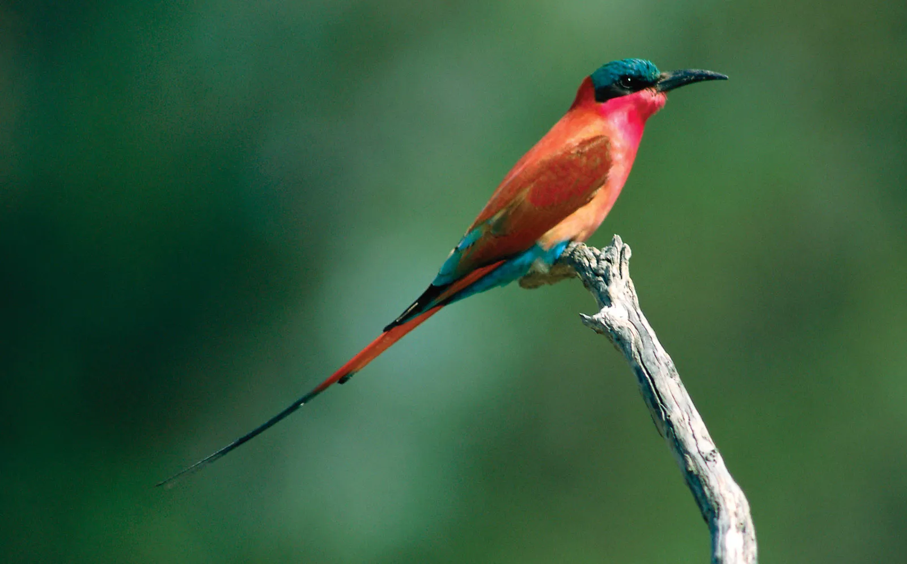

Birds are vertebrate animals adapted for flight. Many can also run, jump, swim, and dive. Some, like penguins, have lost the ability to fly but retained their wings. Birds are found worldwide and in all habitats. The largest is the nine-foot-tall ostrich. The smallest is the two-inch-long bee hummingbird. Everything about the anatomy of a bird reflects its ability to fly. The wings, for example, are shaped to create lift. The leading edge is thicker than the back edge, and they are covered in feathers that narrow to a point. Airplane wings are modeled after bird wings.
